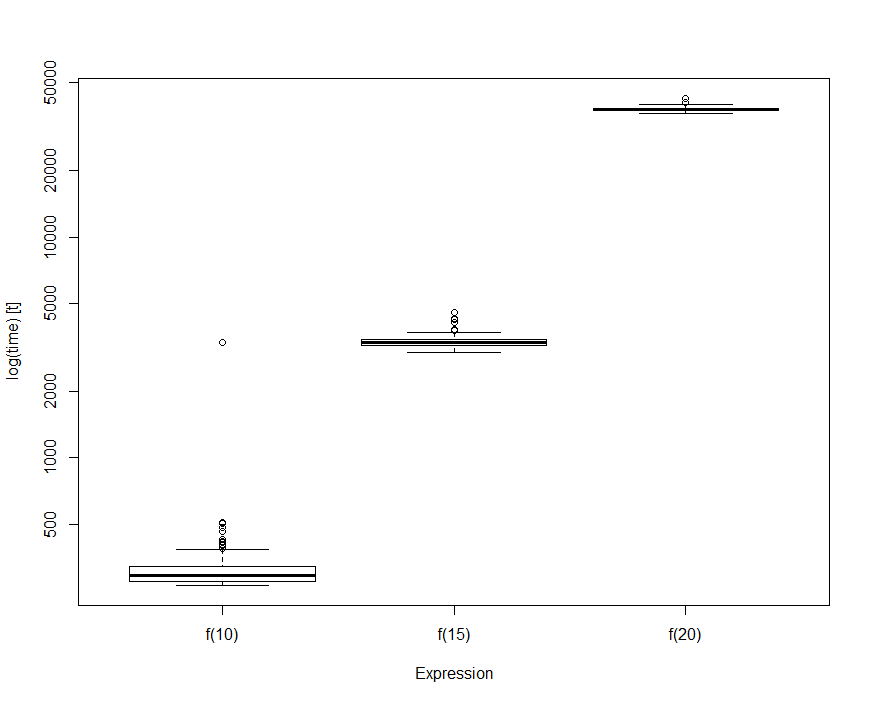

데이터 과학
성능 측정기준 벤치마킹
학습 목표
- R 스크립트, 함수 성능 측정기준을 설정한다.
rbenchmark팩키지를 활용한다.
1. rbenchmark 기준성능 평가 팩키지
rbenchmark 팩키지는 펄(Perl) 벤치마크 모듈에 영감을 받아 제작되었다. system.time을 감싼 함수 하나로 구성된 팩키지다.
사용법은 benchmark 함수에 기준성능을 평가할 함수를 넣어주고, columns= c("test", "replications", "elapsed", "relative") 출력하려고 하는 인자를 넣어준다.
2. 피보나치 예제
피보나치 순열을 재귀를 사용해서 구현한 R코드와 Rcpp코드의 성능을 비교한다. Rcpp 저자인 Dirk Eddelbuettel 박사가 EARL 2015에서 스택오버플로우 예제를 참조하여 작성한 예제다. 1
\[ f(n) = \begin{cases} n, & n < 2 \mbox{ 일 때}\\ f(n-1) + f(n-2), & n \geq 2 \mbox{ 일 때} \end{cases}\]
2.1. 순수 R 코드 구현
#-------------------------------------------------------------------------
# 1. 순수한 R 코드
#-------------------------------------------------------------------------
f <- function(n) {
if (n<2) return(n)
return(f(n-1) + f(n-2))
}
sapply(0:10, f)피보나치 수열을 R코드로 구현한 후 sapply 함수로 0 에서 10까지 숫자를 피보나치 함수 f에 넣어 계산한다.
[1] 0 1 1 2 3 5 8 13 21 34 55rbenchmark 팩키지를 사용해서 10, 15, 20일 경우를 기준성능을 상호비교한다.
# install.packages("rbenchmark")
library(rbenchmark)
benchmark(f(10), f(15), f(20), columns= c("test", "replications", "elapsed", "relative"))피보나치 순열 10일 때 보다 20일 때, 상대적으로 131배나 많은 시간이 소요된 것이 확인된다. 이제 C/C++ 즉, Rcpp로 구현한 성능을 살펴본다.
test replications elapsed relative
1 f(10) 100 0.03 1.000
2 f(15) 100 0.33 11.000
3 f(20) 100 3.95 131.6672.2. Rcpp 코드 구현
피보나치 구현하는 코드를 C/C++로 구현한 후에 Rcpp::cppFunction 내부에 C/C++코드를 넣어주고 실행시키면 된다. 전통적으로 재귀를 사용한 피보나치 순열 구현은 성능이 좋지 않은 것으로 유명한데, C/C++로 구현하여 Rcpp 팩키지로 실행한 것을 보면 450배 순수 R코드에 비해 성능이 월등한 것을 알 수 있다.
library(Rcpp)
Rcpp::cppFunction(
"int g(int n) {
if (n < 2) return(n);
return(g(n-1)+g(n-2));
}")
benchmark(f(25), g(25), columns= c("test", "replications", "elapsed", "relative"))test replications elapsed relative
1 f(25) 100 17.404 446.256
2 g(25) 100 0.039 1.0003. 기준정보 벤치마크 시각화
microbenchmark 팩키지에 시각화하는 기능이 내장되어 있다. boxplot 등 기본 그래픽 기능을 활용하여 상대적인 비교를 시각적으로 수행한다.
#-------------------------------------------------------------------------
# 3. 시각화
#-------------------------------------------------------------------------
# install.packages("microbenchmark")
library(microbenchmark)
bm_res <- microbenchmark(f(10), f(15), f(20), unit="s")
boxplot(bm_res)